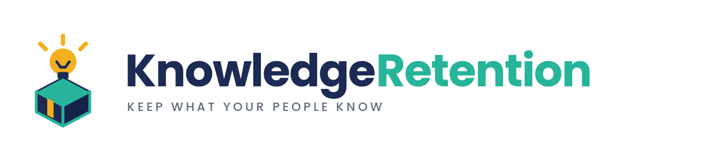

Purpose-built products.
One model.
Each ChAImp solution was shaped with a real partner nonprofit and built around the same belief: AI should enhance the admin experience, never replace it. The goal is always the same — give your team back the hours, so they can spend them on mission.
A nonprofit CRM small enough to actually use.
Donors, volunteers, programs, and the people you serve — in one place a two-person team can run.
Co-built with an organization focused on the foster care system. Most nonprofit CRMs are enterprise software with a nonprofit discount bolted on. CartonCrew is the opposite: built from the ground up for community-level nonprofits, with the workflows that matter and none of the bloat you'll never touch. We run ChAImp on it ourselves. Underneath, AI works as relationship memory — surfacing what each supporter cares about, what was promised, and what comes next — so the human conversations stay human.
Visit cartoncrew.online →The nonprofit CRM that speaks gallery.
Artists, artworks, exhibitions, and collectors — first-class, not crammed into a generic contact field.
Co-built with a community art gallery. CartonCrewStudio is CartonCrew tuned for nonprofit art galleries and community studios: the same lean CRM, but it knows your world. Instead of bending a one-size-fits-all "constituent" record around an artist, or filing a piece under "notes," it gives you the things you actually work with — artists, works, exhibitions, patrons, and programs. Underneath, the same AI relationship memory keeps track of which collector follows which artist, what a patron bought or pledged, and who's due for a show — so the conversations that keep a gallery alive stay personal. Built on the CRM we run ChAImp on, specialized for the galleries and studios doing big, meaningful work on lean budgets.
✨ New — a CartonCrew spin-off, currently in development.
Visit cartoncrew.art →Everything an animal rescue runs on — in one place.
Web presence, volunteers, adoptions, surrenders, fundraising
Co-built with a dog rescue spanning the West Coast, RescueCentral grew out of what an active rescue actually needs to run, day in and day out. Animal rescues juggle a public website, adoption applications, surrender intake, volunteer and foster coordination, and ongoing fundraising — usually across half a dozen disconnected tools. RescueCentral unifies the whole operation behind a modern web presence built for the public, and a streamlined back office built for the people doing the work. AI works as triage and decision support: pre-reading adoption applications, flagging concerns for a volunteer to look at, and queuing up the next action so nothing falls through the cracks.
📅 Case study coming Summer 2026 — our founding rescue partner goes live with RescueCentral this summer.
Visit rescuecentral.app →A modern, mobile-first home for your PTA/PTO.
Built for the way parents actually use their phones
Co-built with a real school PTA, SchoolPTA was shaped by the people who actually run one — not designers guessing at it. PTAs and PTOs do enormous work on aging websites, email chains, and paper sign-ups; SchoolPTA brings all of that into a clean, mobile-first experience: events, sign-ups, volunteer slots, fundraising, and communication — all in one place, all on a phone. AI takes on the unglamorous work the board never had time for — drafting the weekly newsletter, generating the next sign-up sheet, nudging the parent who forgot to RSVP — so volunteer evenings stop being inbox evenings.
📅 Case study coming Fall 2026 — our first PTA launches SchoolPTA for the new school year.
Visit schoolpta.org →
When someone leaves, their knowledge shouldn't leave with them.
Digital estate planning for your nonprofit
Seven in ten nonprofits have no written succession plan. The founding ED, the volunteer who has run the gala for nine years, the board member who remembers why it's done that way — when they go, it all goes with them. KnowledgeRetention captures what lives in people's heads, inboxes, and scattered files, and turns it into answers your team can actually find. AI does the part nobody has time for: a guided interview by voice or chat that feels like a conversation instead of homework, then the messy work of turning it into role playbooks, a recurring-duties calendar, and a Q&A layer that always shows its sources — so you know where an answer came from and whether to trust it.
About that voice interview: the recording is transcribed and then deleted within 24 hours — the shortest retention our transcription provider allows — and model training is explicitly switched off. Your people's voices are not a training set.
🔒 In closed beta — the free tier is available now.
Visit knowledgeretention.help →Your unmet need here
Tell us what the market forgot
If your nonprofit has a recurring software pain — something that doesn't exist, costs too much, or treats your sector as an afterthought — that's exactly where our next solution starts. Bring the need. We'll bring the build.